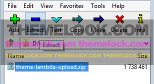
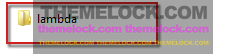
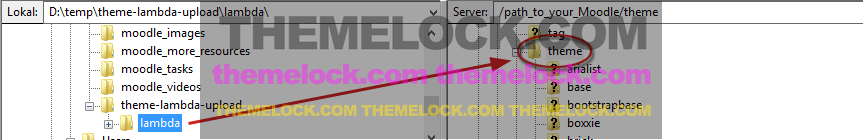

Updates
Changelog
View complete version historyInstalling an update
For an update of Theme Lambda, you have to copy the new download to the server file system manually.
To do so, please perform the following steps:
Download the zip file of the update.
Extract the theme folder theme-lambda-upload to its own named folder.

Inside the extracted folder, you will find a folder called lambda.

Using your FTP program, upload the extracted folder lambda to the /theme folder of your Moodle installation (overwrite existing files).

- Now login to your Moodle site. You will then be automatically redirected to Administration > Site administration > Notifications. You will see a notification for the theme to be updated. Click the "Upgrade Moodle Database now" button.
All settings that you have made are stored in the Moodle database, so none of your settings will get lost.
(Please note: If you have edited the php files or the css files of the theme, then you should make a backup of these files).